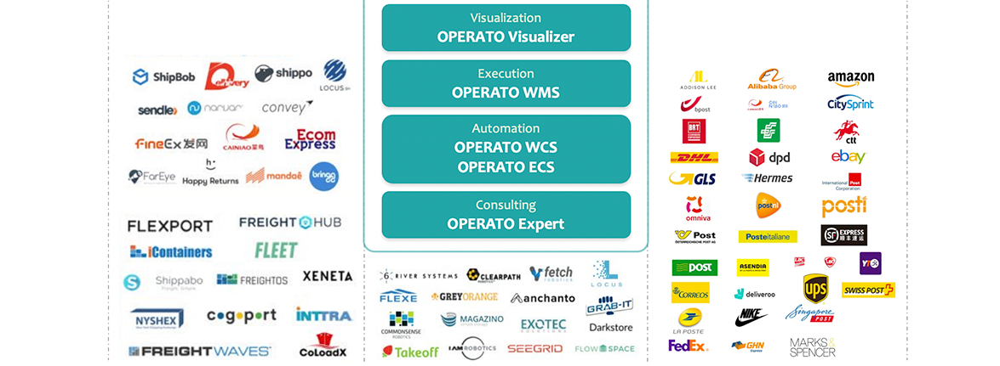
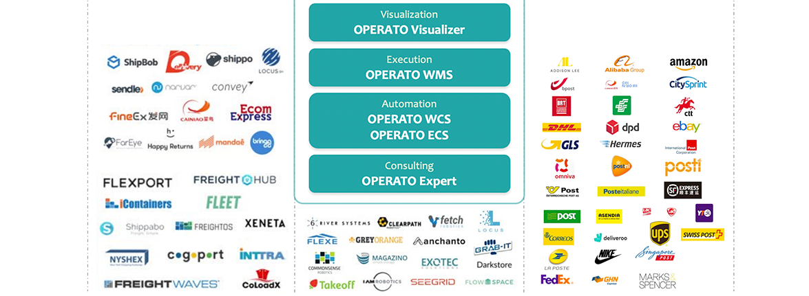

-
 REIMAGINING LOGISTICS하티오랩은 웨어하우스를 통한 물류를 재설계함으로써, 공급망에서의 기존의 방식을 파괴하고 변화시키려고 합니다.
REIMAGINING LOGISTICS하티오랩은 웨어하우스를 통한 물류를 재설계함으로써, 공급망에서의 기존의 방식을 파괴하고 변화시키려고 합니다.
공급망에서 매우 중요하지만 취약한 고리가 되고 있는 웨어하우스를,진보된 단일 플랫폼으로 제공하는
통합 물류서비스 리더로 성장하고 있습니다.
 

What We Provide
물류 특화 프레임워크
웹기반의 물류 특화 프레임워크로써 분류처리 컨테이너 및 설비 플러그인 제공
높은 유연성
변화하는 물류환경에 신속한 대응과 고객별 최적화 서비스가 가능하며 설정 프로파일 제공
분류설비 통합 운영
B2B, B2C 특화모듈 및 고속분류별 모듈 제공과 WCS를 통한 효율적 리솟 운영 가능
설비 최적화 운영
플러그 인 형태로 설비 운영하며 실시간 주문 병합으로 설비의 유휴시간 감소, 가동율 증가
통합 모니터링 제공
물류센터의 설비 및 창고별 현황을 웹기반 2D, 3D로 제공하여 실시간 모니터링 가능
물류환경 선진화
모바일 장비 지원, IoT 및 클라우드 기술을 활용한 스마트 물류환경으로 선진화
분류 컨테이너 제어
분류를 위한 API 제공, 분류 모듈관리 컨테이너 제공, 변화가 심하거나 복잡한 프로세스 대응 가능
출고 및 반품 설비 제어
배치 병합 / 병렬처리 / 투입 시 점등 / 작업 방식 옵션 등 제어, 출고-반품 전환 가능
소터 관리 시스템
작업자 개별 생산성 고려한 물량 분배 로직 적용, 반품/출고/온라인 동시 작업 제어, 타분류 설비와 연동

operato architecture

operato-visualizer detail

operato-wms detail

operato-wcs detail

operato-ecs detail


© Hatio, Lab. Inc. All rights reserved.